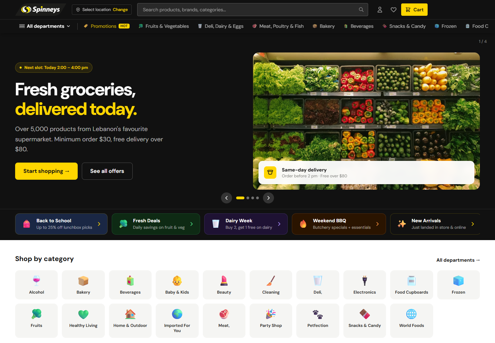
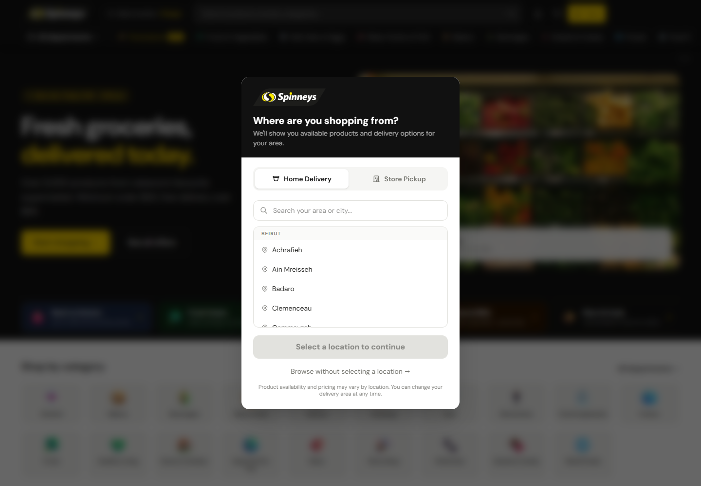
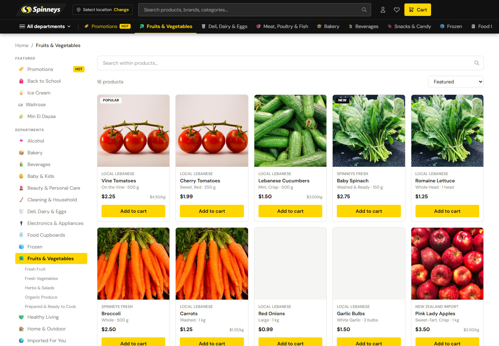
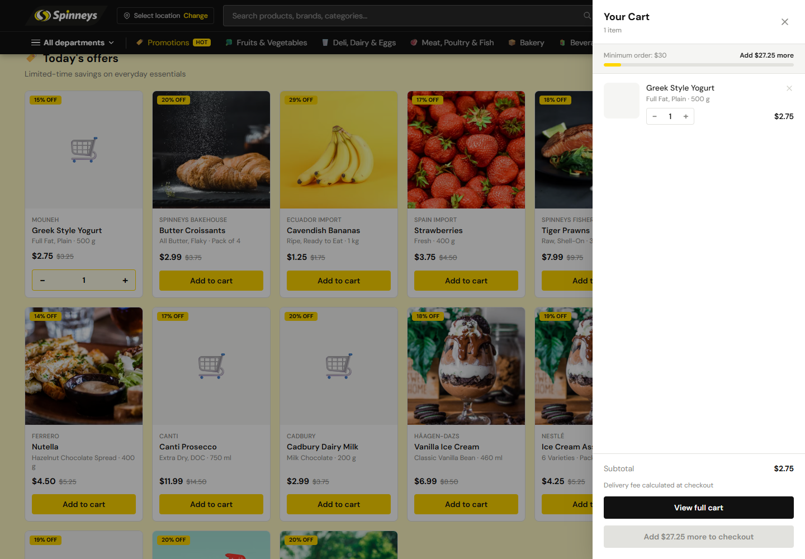
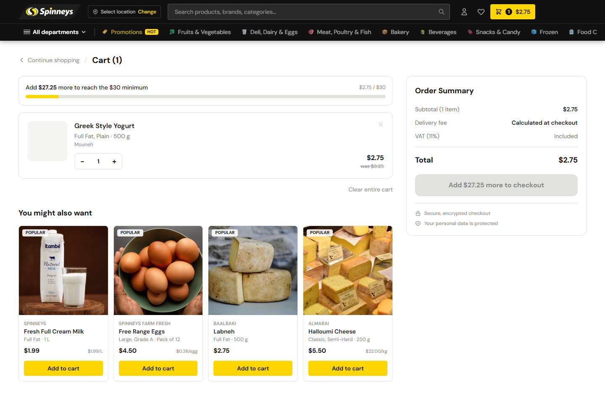

Grocery shopping,
without the guesswork.
An audit-led redesign of Spinneys Lebanon's online store—turning a crowded, promotion-heavy experience into a clearer path from location selection to product discovery, basket building and checkout readiness.
Explore the interactive prototype
01 / Evidence before pixels
The redesign began with a focused guest-journey audit.
Scope: desktop arrival-to-cart journey. Ratings are heuristic findings, not analytics or measured business outcomes.First visit
Clear intent, but the location decision competed with too much interface noise.
Discovery
Relevant results were weakened by dense navigation and limited comparison clarity.
Product detail
The strongest audited step, with useful information and delivery reassurance.
Cart clarity
A disabled checkout created a dead end without explaining the $30 minimum.
02 / What needed to change
Four friction points shaped the product strategy.
Explain the minimum order
Show the exact amount remaining wherever checkout is unavailable, and update it live with basket changes.
Make variants scannable
Keep product family, variant, pack size, price and unit price visible without opening every item.
Reduce first-visit competition
Make delivery or pickup the first decision, keep chat collapsed and preserve a provisional browsing route.
Strengthen interface clarity
Simplify header layers, increase contrast and standardize primary, secondary and disabled states.
03 / First-use experience
Ask for context—then get out of the way.
The location step explains why the information matters, separates home delivery from store pickup, adds area search and lets people browse before committing. Availability remains explicitly provisional until a location is selected.
- Manual location entry before any permission request
- Delivery and pickup expressed as clear modes
- Searchable locations with a low-risk browse option
- Easy location changes from the persistent header

04 / Redesigned journey
From intent to a checkout-ready basket.
- 01Locate
Choose delivery or pickup and set the availability context.
- 02Discover
Search, browse frequent categories or enter through a useful offer.
- 03Compare
Read the variant, size, price and unit price directly in the grid.
- 04Build
Add and adjust quantities without leaving the shopping surface.
- 05Resolve
Understand minimum-order progress and the exact next action.
05 / Key interfaces
A system designed around frequent shopping.


06 / Conversion-critical redesign
A disabled button should never feel broken.
The audited cart blocked checkout below $30 but hid the reason in the full-cart view. The redesign turns that dead end into a clear, dynamic recovery path.

Show the rule early
The $30 threshold appears in the hero, mini-cart and full cart—not only at the final action.
Calculate the gap
“Add $27.25 more” updates with every basket change and pairs text with a progress bar.
Keep costs honest
VAT treatment is stated and delivery is marked “calculated at checkout” instead of displayed as zero.
Support recovery
Continue shopping and relevant recommendations sit nearby without interrupting quantity editing.
07 / Interface system
Recognizably Spinneys. More disciplined.
The redesign preserves the black, white and yellow identity, then gives every color a job: black for structure, white for clarity and yellow for selection or action. Compact typography and restrained borders keep dense grocery information readable.
08 / Inclusive by design
Clarity must work beyond the visual layer.
Purposeful labels
Search is named “Search products”; icon-only actions and quantity controls receive explicit accessible names.
Understandable states
Status uses text and structure—not color alone—and disabled actions explain what must change.
Reachable interaction
Touch targets aim for approximately 44 × 44 px with visible focus and logical keyboard order.
Live feedback
Cart totals, filters and add-to-cart updates are designed to be announced to assistive technology.
A visual prototype can identify risks, but WCAG 2.2 AA conformance still requires implementation testing for keyboard behavior, screen readers, zoom and measured contrast.
09 / What I would validate next